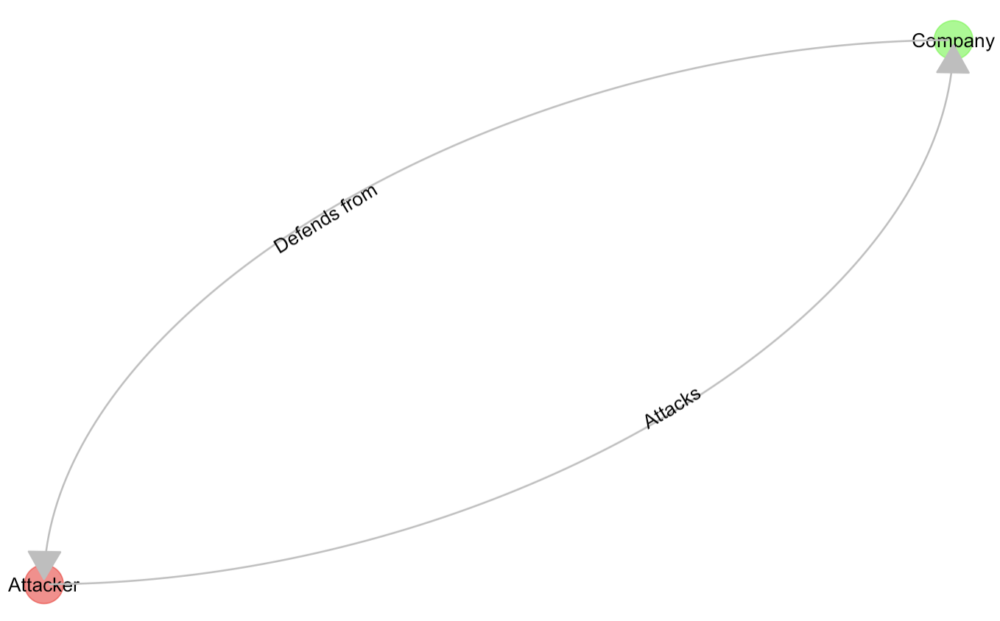
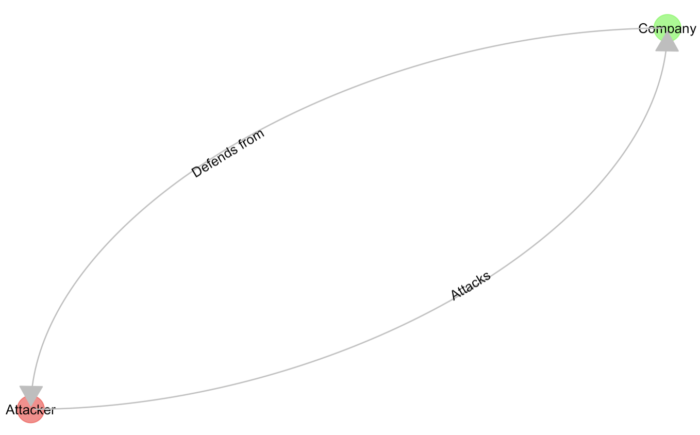

Intro
I think I might have a start of an idea, for my MSc project. Although it’s… Incipient.
How do we know what we know?
So from a Cybersecurity (blue team) stand-point, one would (generally) want:to “segment” an IT Network as much as possibleto “patch” the overall infrastructure as much/fast as possible (“Protect”)to have the employees very much worrying about (i.e. “aware of”) Phishing risksto use “secure” codeto have a perfect inventory (“Discover”)to have crazy-fast reaction times (“IR”)to detect all weird things (“Detect”)to have the smallest possible IT footprint/surface to protect…The “…” above can easily become a VERY long list.The reality being, either because of budget constraints or complexity of large enterprise networks (or a mix of these and other factors), that you could easily assume none of the above is perfect anywhere. And so it’s only natural I first thought of Operational Research and Optimization…After all, sometimes you just can’t patch a Web Server the same day a vulnerability patch is made available, because while testing it, you find out you break the application you were running (i.e. you break you business application, i.e. your income stream, to some extent).(Note: Many such assumptions could go for the “attacker” (alright, obviously a bit different): You want to know the objective’s surface, find vulnerable systems, as many as possible, use phishing to get credentials, usually with the goal of getting data or extortion…)Where should you put your “next effort” (a colleague said “next dollar”, same-same) as the Cybersecurity team?All of the above make sense… Intuitively.But where is the data or “science” supporting any one action over another?For instance, if you had to choose: Should you implement micro-segmentation, or rather honeypots across your network?Sure: Zero Trust is in fashion, but what is it YOU (your company) needs next? How would you justify your choice (hint: the answer “Gartner/Forrester says so”, well, I don’t quite agree with, in general…)
A Cyber-secure Organisation Simulator
So here is the deal. A Simulation is… Imperfect. (hence the title of this entry) Let’s start right there: I couldn’t possibly throw in ALL of the complexity of a real-world network – and I certainly don’t intend to.But I’ve been learning about Simulation, Parallel Computing, Mathematical modelling, and reading (quite a bit) about Chaos, complexity, optimisation, Operations Research… I’ve implemented an SIS-model on Graph Networks (epidemiology stuff), I’ve studied congestion and queuing systems in complex networks, done lots (well, quite a few, by now) of Monte-Carlo runs to observe effects of different configurations “while time passes”, I’ve played around with Genetic Algorithms – and you can use these for instance to “tune” parameters for optimization of things…So how about I simulated one (or MANY, why not) network(s) of systems/applications/software components/users, with:MORE OR LESS Segmentation (i.e. Network topology, that was the second thing I thought of…),FASTER/SLOWER Patching policy,BETTER/WORSE inventory coverage,HIGH/LOW training of Employees about Phishing…As a network, under “attack”, with (based on the former parameters) more or less risk of “infection spreading”…ALL of the above parameters could be things to optimize (e.g. using a Genetic Algorithm), within supposed budget constraints (Optimisation, Metaheuristic).Each Network would then “live” for a while (passing of time), and depending of the parameters, an infection would appear (or not), spread more or less…And so we could come up with simulated data about relation of level of segmentation and spreading risk, and MANY MANY other possible prioritization of “where to spend my next Cybersecurity Budget’s Dollar”.
Applicability
All the above could be fully based on purely invented data (and as a “non-teleological” simulation, would be interesting in itself).Yes, I said “non-teleological”… I had to look it up myself, while reading “Antifragility” by N. Taleb… (I find the writing to be messy/disorganized, but the contents/ideas are great). What it means here is, I am willing to run such simulations solely for the sake of learning something, NOT to prove anything (i.e. without a clear objective).But then, after some tests, dry-runs, evaluations of metrics, better definition of sensible variables values/ranges…Why not take a “real” corporate IT network as the basis for the simulated network, with parameters that somehow reflect a company’s reality, and then run simulations on THAT.Would we learn anything? I just wonder…
Starting point
As it turns out, I wanted to “just get started”, so that this “thing” would have some momentum. Plus, there is only so much note-taking, thinking-while-walking-in-circles, and reading (a lot), that I can do without putting something together to cristalise a bit my ideas.While I was at it (lots of “igraph”), I found quite unexpectedly the “ggraph” package, and gave it a go… It’s not half bad 🙂My thinking process has been a mess, with ideas of complexity and emergence and what-not, but I finally decided I should reverse gears and begin… At the beginning.And so, thinking about Cybersecurity efforts within a company, I guess this could be a reasonable starting point: The Cybersecurity Department works toward ensuring the Company gets paid (duh! But obvious as it may seem, this is just the thing, it’s not about defending, it’s about defending for a reason… Which usually is about money, in the end). To do so, we in fact focus on ensuring protection of:the stability of our services,our client’s private information,our own IP (if there is any)…Part of that is trying to protect the above from “bad” third party (and here, “third party” could involve an employee, I mean, who knows…).For the purpose of my simulations, I shall focus on this, though:And that’s the beginning. It’s quite… Unimpressive, granted. But that’s not the project… The next step is to “explode” the Company node into its components. And then implement simulations on top of that. And THAT’s the general idea.
The Cybersecurity Department works toward ensuring the Company gets paid (duh! But obvious as it may seem, this is just the thing, it’s not about defending, it’s about defending for a reason… Which usually is about money, in the end). To do so, we in fact focus on ensuring protection of:the stability of our services,our client’s private information,our own IP (if there is any)…Part of that is trying to protect the above from “bad” third party (and here, “third party” could involve an employee, I mean, who knows…).For the purpose of my simulations, I shall focus on this, though:And that’s the beginning. It’s quite… Unimpressive, granted. But that’s not the project… The next step is to “explode” the Company node into its components. And then implement simulations on top of that. And THAT’s the general idea.
Conclusions
Now I have NO IDEA what the “thing” will show. Maybe it’s a complete flop. Maybe there is no humanly sensible way of interpreting the “results”.But maybe, JUST MAYBE, I could learn something about the relative value of each security measure one could take to protect a network from intrusion? And IF I did, well, maybe there would be something more to support say a better network segmentation, further employees training (…) than the “logical intuition” that “it makes sense”.ALSO to be noted: I started looking for potentially relevant papers about the same ideas.I promise I came up with the idea of my simulator completely on my own (i.e. “independently”), but as it happens… Someone almost beat me to it (in a way, not quite the same, so I can move forward).
References
On top of the aforementioned paperThis seems tangential in conceptSomething a bit further removed (but interesting)Also probably interesting